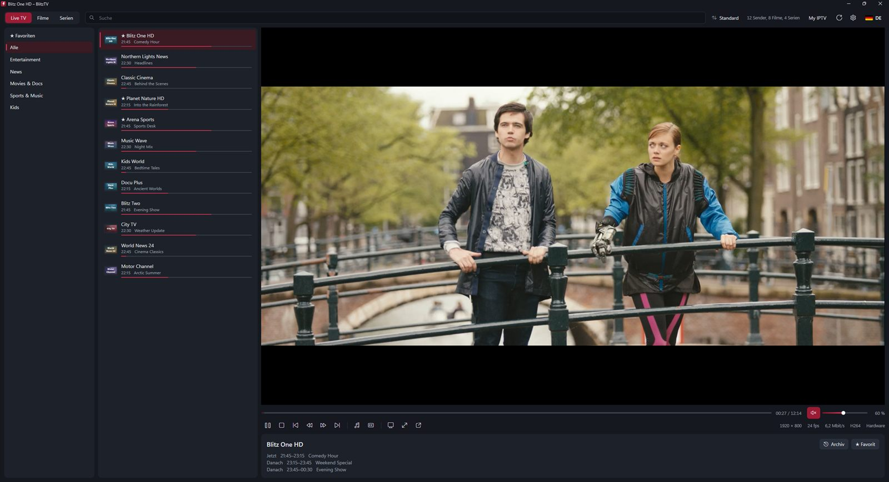
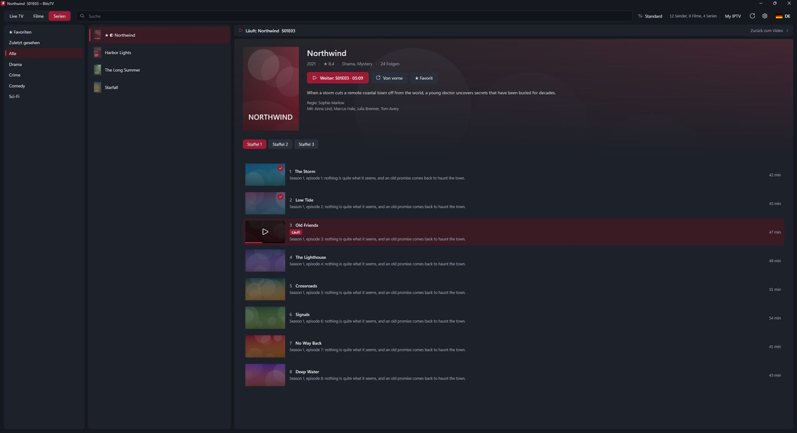
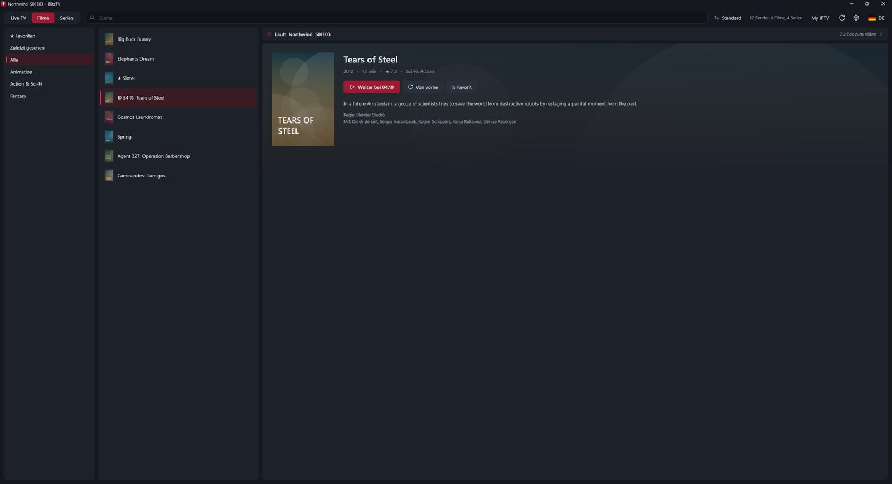
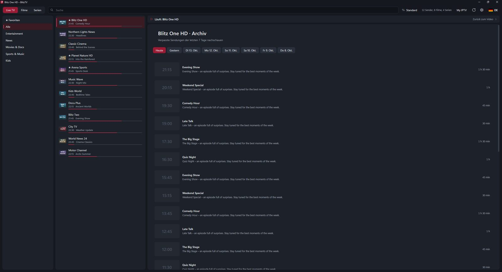
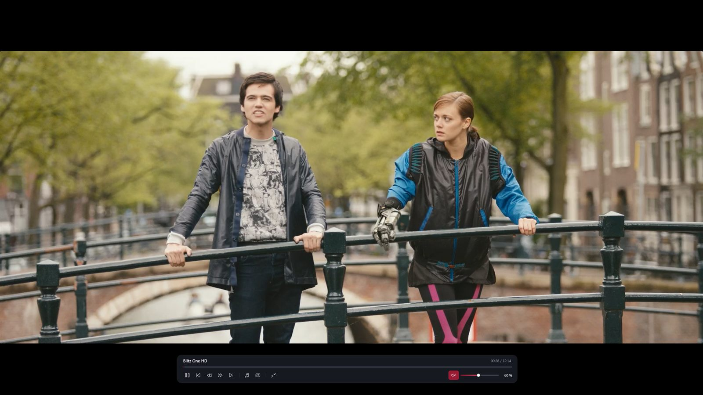

Live-TV mit Programm, Filme und Serien mit Weiterschauen – aus deiner eigenen Playlist. Xtream Codes oder M3U eintragen, fertig. Ohne MAC-Adresse, ohne Hochladen auf fremde Webseiten, ohne Abo.
Im Microsoft Store holen
Schlank, schnell und übersichtlich – auch bei zehntausenden Sendern und Filmen.
Laufende Sendung mit Fortschrittsbalken direkt in der Senderliste, dazu was als Nächstes kommt.
Detailseite mit Cover, Handlung und Bewertung. Staffeln und Folgen übersichtlich, Weiterschauen an der richtigen Stelle.
Verpasste Sendungen der letzten Tage nachschauen – wenn dein Anbieter das unterstützt.
Video im Vollbild auf dem zweiten Monitor, Listen auf dem ersten. Discord-Freigabe zeigt nur das Bild, ohne Balken.
Hardware-beschleunigte Wiedergabe, schnelles Umschalten und automatisches Neuverbinden bei Aussetzern.
Tonspur und Untertitel wählen – deine Sprache merkt sich BlitzTV für den nächsten Film.
Deutsch, Englisch, Französisch, Spanisch, Italienisch, Türkisch, Polnisch, Russisch, Arabisch und mehr.
Deine Zugangsdaten bleiben verschlüsselt auf deinem PC. BlitzTV sammelt keine Daten.
Kein Abtippen von MAC-Adressen, keine Webseite zum Hochladen der Playlist.
BlitzTV aus dem Microsoft Store laden – 7 Tage kostenlos und ohne Anmeldung.
Server, Benutzername und Passwort deines Anbieters – oder einfach den M3U-Link einfügen.
Nach wenigen Sekunden siehst du alle Sender, Filme und Serien. Ein Klick genügt.
Dunkel, ruhig und auf das Wesentliche reduziert.




Steht deine Frage nicht dabei? Schreib uns: beinke3@gmail.com
Nein. BlitzTV ist ein reiner Player und enthält keine Inhalte. Du brauchst eine Playlist von einem IPTV-Anbieter. Bitte nutze nur Playlists, für die du die Rechte hast.
Xtream-Codes-Zugänge (Server, Benutzername, Passwort) und M3U-Playlists als Link oder Datei. Ein Xtream-M3U-Link wird automatisch als Xtream-Zugang eingerichtet – mit Programm, Serien und Archiv.
Du kannst BlitzTV 7 Tage kostenlos und ohne Einschränkungen testen. Danach kostet es einmalig 9,99 € – kein Abo, alle künftigen Updates inklusive.
Ja. Du kannst beliebig viele Playlists anlegen und jederzeit zwischen ihnen wechseln. Favoriten und Fortschritt merkt sich BlitzTV je Playlist.
Eine Xbox-Version ist in Arbeit. Geplant ist: einmal kaufen, auf PC und Xbox nutzen.
Einen PC mit Windows 10 oder Windows 11 (64 Bit) und eine Internetverbindung. Für 4K empfiehlt sich eine schnelle Leitung.